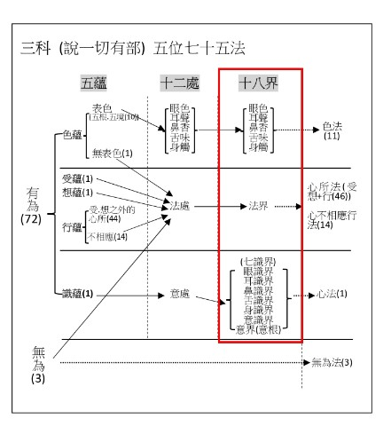
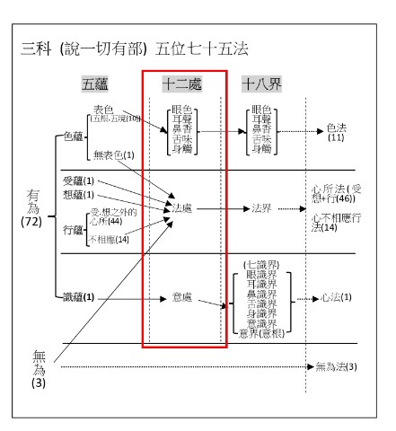
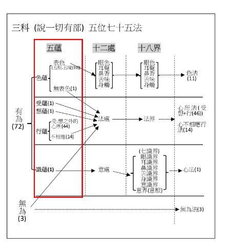

先觀十八界→十二處→五蘊→四念住→四聖諦→猶如隔絹觀諸色像→聞所成慧→思所成慧→ |
||||||||||||||||||||||||||||||||||||||||||||||||||||||||||||||||||||||||||||||||||||||||||||||||||||||||||||||||||
|---|---|---|---|---|---|---|---|---|---|---|---|---|---|---|---|---|---|---|---|---|---|---|---|---|---|---|---|---|---|---|---|---|---|---|---|---|---|---|---|---|---|---|---|---|---|---|---|---|---|---|---|---|---|---|---|---|---|---|---|---|---|---|---|---|---|---|---|---|---|---|---|---|---|---|---|---|---|---|---|---|---|---|---|---|---|---|---|---|---|---|---|---|---|---|---|---|---|---|---|---|---|---|---|---|---|---|---|---|---|---|---|---|---|---|
| 修所成慧（名為煖）→頂→忍→世第一法→見道→修道→無學道，次第善根滿足。 | ||||||||||||||||||||||||||||||||||||||||||||||||||||||||||||||||||||||||||||||||||||||||||||||||||||||||||||||||||
| 問： | 修煖加行，其相云何？ |
|||||||||||||||||||||||||||||||||||||||||||||||||||||||||||||||||||||||||||||||||||||||||||||||||||||||||||||||||
| 答： | 以要言之，三慧為相→謂聞所成慧、思所成慧、修所成慧。 | |||||||||||||||||||||||||||||||||||||||||||||||||||||||||||||||||||||||||||||||||||||||||||||||||||||||||||||||||
| 問： | 云何修習「聞所成慧」？ |
|||||||||||||||||||||||||||||||||||||||||||||||||||||||||||||||||||||||||||||||||||||||||||||||||||||||||||||||||
| 答： | 修觀行者〜 | |||||||||||||||||||||||||||||||||||||||||||||||||||||||||||||||||||||||||||||||||||||||||||||||||||||||||||||||||
| 一、 | 1.或遇明師，為其略說諸法要者，唯有十八界、十二處、五蘊。 | |||||||||||||||||||||||||||||||||||||||||||||||||||||||||||||||||||||||||||||||||||||||||||||||||||||||||||||||||
2.或自讀誦素怛纜藏、毘奈耶藏、阿毘達磨藏，令善熟已。 |
||||||||||||||||||||||||||||||||||||||||||||||||||||||||||||||||||||||||||||||||||||||||||||||||||||||||||||||||||
| 作如是念：「三藏文義，甚為廣博，若恒憶持，令心厭倦，三藏所說要者，唯有十八界、十二處、五蘊。」 | ||||||||||||||||||||||||||||||||||||||||||||||||||||||||||||||||||||||||||||||||||||||||||||||||||||||||||||||||||
3.作是念已，先觀察十八界，彼觀察時，立為三分→謂名故、自相故、共相故。 |
||||||||||||||||||||||||||||||||||||||||||||||||||||||||||||||||||||||||||||||||||||||||||||||||||||||||||||||||||
| 名者→謂此名眼界，乃至此名意識界。 | ||||||||||||||||||||||||||||||||||||||||||||||||||||||||||||||||||||||||||||||||||||||||||||||||||||||||||||||||||
| 自相者→謂此是眼界自相，乃至此是意識界自相。 | ||||||||||||||||||||||||||||||||||||||||||||||||||||||||||||||||||||||||||||||||||||||||||||||||||||||||||||||||||
 |
||||||||||||||||||||||||||||||||||||||||||||||||||||||||||||||||||||||||||||||||||||||||||||||||||||||||||||||||||
| 共相者→謂十六行相，所觀十八界，十六種共相，彼緣此界-修智、修止。 | ||||||||||||||||||||||||||||||||||||||||||||||||||||||||||||||||||||||||||||||||||||||||||||||||||||||||||||||||||
| 於十八界修智、止已，復生厭倦，作如是念：「此十八界即十二處，故應略之。」 | ||||||||||||||||||||||||||||||||||||||||||||||||||||||||||||||||||||||||||||||||||||||||||||||||||||||||||||||||||
|
||||||||||||||||||||||||||||||||||||||||||||||||||||||||||||||||||||||||||||||||||||||||||||||||||||||||||||||||||
| 二、 | 入「十二處」→謂十色界即十色處，七心界即意處，法界即法處。 |
|||||||||||||||||||||||||||||||||||||||||||||||||||||||||||||||||||||||||||||||||||||||||||||||||||||||||||||||||
1.彼觀察此十二處時，立為三分：謂名故、自相故、共相故。 |
||||||||||||||||||||||||||||||||||||||||||||||||||||||||||||||||||||||||||||||||||||||||||||||||||||||||||||||||||
名者→謂此名眼處，乃至此名法處。 |
||||||||||||||||||||||||||||||||||||||||||||||||||||||||||||||||||||||||||||||||||||||||||||||||||||||||||||||||||
| 自相者→謂此是眼處自相，乃至此是法處自相。 | ||||||||||||||||||||||||||||||||||||||||||||||||||||||||||||||||||||||||||||||||||||||||||||||||||||||||||||||||||
 |
||||||||||||||||||||||||||||||||||||||||||||||||||||||||||||||||||||||||||||||||||||||||||||||||||||||||||||||||||
| 共相者→謂十六行相，所觀十二處，十六種共相，彼緣此處修智、修止。 | ||||||||||||||||||||||||||||||||||||||||||||||||||||||||||||||||||||||||||||||||||||||||||||||||||||||||||||||||||
| 2.於十二處修智、止已，復生厭倦，作如是念：「此十二處，除無為，即五蘊故，應略之。」 | ||||||||||||||||||||||||||||||||||||||||||||||||||||||||||||||||||||||||||||||||||||||||||||||||||||||||||||||||||
|
||||||||||||||||||||||||||||||||||||||||||||||||||||||||||||||||||||||||||||||||||||||||||||||||||||||||||||||||||
| 三、 | 入於「五蘊」→謂十色處及法處所攝色即色蘊，意處即識蘊。法處中-受即受蘊。想即想蘊。餘心所法、不相應行即行蘊。 |
|||||||||||||||||||||||||||||||||||||||||||||||||||||||||||||||||||||||||||||||||||||||||||||||||||||||||||||||||
1.彼觀察此五蘊時，立為三分：謂名故、自相故、共相故。 |
||||||||||||||||||||||||||||||||||||||||||||||||||||||||||||||||||||||||||||||||||||||||||||||||||||||||||||||||||
| 名者→謂此名色蘊，乃至此名識蘊。 | ||||||||||||||||||||||||||||||||||||||||||||||||||||||||||||||||||||||||||||||||||||||||||||||||||||||||||||||||||
| 自相者→謂此是色蘊自相，乃至此是識蘊自相。 | ||||||||||||||||||||||||||||||||||||||||||||||||||||||||||||||||||||||||||||||||||||||||||||||||||||||||||||||||||
 |
||||||||||||||||||||||||||||||||||||||||||||||||||||||||||||||||||||||||||||||||||||||||||||||||||||||||||||||||||
| 共相者→謂十二行相。所觀五蘊，十二種共相。彼緣此蘊-修智、修止。 | ||||||||||||||||||||||||||||||||||||||||||||||||||||||||||||||||||||||||||||||||||||||||||||||||||||||||||||||||||
| 2.於五蘊，修智、止已，復生厭倦，作如是念：「此五蘊并無為，即四念住故，應略之。」 | ||||||||||||||||||||||||||||||||||||||||||||||||||||||||||||||||||||||||||||||||||||||||||||||||||||||||||||||||||
|
||||||||||||||||||||||||||||||||||||||||||||||||||||||||||||||||||||||||||||||||||||||||||||||||||||||||||||||||||
| 四、 | 入「四念住」→謂色蘊即身念住。受蘊即受念住。識蘊即心念住。想、行蘊并無為，即法念住。 |
|||||||||||||||||||||||||||||||||||||||||||||||||||||||||||||||||||||||||||||||||||||||||||||||||||||||||||||||||
1.彼觀察此四念住時，立為三分：謂名故、自相故、共相故。 |
||||||||||||||||||||||||||||||||||||||||||||||||||||||||||||||||||||||||||||||||||||||||||||||||||||||||||||||||||
| 名者→謂此名身念住。乃至此名法念住。 | ||||||||||||||||||||||||||||||||||||||||||||||||||||||||||||||||||||||||||||||||||||||||||||||||||||||||||||||||||
| 自相者→謂此是身念住自相。乃至此是法念住自相。 | ||||||||||||||||||||||||||||||||||||||||||||||||||||||||||||||||||||||||||||||||||||||||||||||||||||||||||||||||||
共相者→謂十六行相。所觀四念住，十六種共相。彼緣此念住，修智、修止。 |
||||||||||||||||||||||||||||||||||||||||||||||||||||||||||||||||||||||||||||||||||||||||||||||||||||||||||||||||||
| 2.於四念住修智、止已，復生厭倦，作如是念：「此四念住，除虛空、非擇滅，即四聖諦故，應略之。」 | ||||||||||||||||||||||||||||||||||||||||||||||||||||||||||||||||||||||||||||||||||||||||||||||||||||||||||||||||||
|
||||||||||||||||||||||||||||||||||||||||||||||||||||||||||||||||||||||||||||||||||||||||||||||||||||||||||||||||||
| 五、 | 入四聖諦→謂有漏法果分即苦諦。因分即集諦。擇滅即滅諦。對治即道諦。 | |||||||||||||||||||||||||||||||||||||||||||||||||||||||||||||||||||||||||||||||||||||||||||||||||||||||||||||||||
| 1.彼觀察此四聖諦時，立為三分：謂名故、自相故、共相故。 | ||||||||||||||||||||||||||||||||||||||||||||||||||||||||||||||||||||||||||||||||||||||||||||||||||||||||||||||||||
| 名者→謂此名苦諦，乃至此名道諦 | ||||||||||||||||||||||||||||||||||||||||||||||||||||||||||||||||||||||||||||||||||||||||||||||||||||||||||||||||||
| 自相者→謂此是苦諦自相，乃至此是道諦自相。 | ||||||||||||||||||||||||||||||||||||||||||||||||||||||||||||||||||||||||||||||||||||||||||||||||||||||||||||||||||
| 共相者→謂… | ||||||||||||||||||||||||||||||||||||||||||||||||||||||||||||||||||||||||||||||||||||||||||||||||||||||||||||||||||
| 四行相〜所觀「苦諦」-四種共相：一、苦。二、非常。三、空。四、非我。 | ||||||||||||||||||||||||||||||||||||||||||||||||||||||||||||||||||||||||||||||||||||||||||||||||||||||||||||||||||
| 四行相〜所觀「集諦」-四種共相：一、因。二、集。三、生。四、緣。 | ||||||||||||||||||||||||||||||||||||||||||||||||||||||||||||||||||||||||||||||||||||||||||||||||||||||||||||||||||
| 四行相〜所觀「滅諦」-四種共相：一、滅。二、靜。三、妙。四、離。 | ||||||||||||||||||||||||||||||||||||||||||||||||||||||||||||||||||||||||||||||||||||||||||||||||||||||||||||||||||
| 四行相〜所觀「道諦」-四種共相：一、道。二、如。三、行。四、出。 | ||||||||||||||||||||||||||||||||||||||||||||||||||||||||||||||||||||||||||||||||||||||||||||||||||||||||||||||||||
|
||||||||||||||||||||||||||||||||||||||||||||||||||||||||||||||||||||||||||||||||||||||||||||||||||||||||||||||||||
| 2.彼緣此諦修智、修止，於「四聖諦」修智、止時，如「見道」中，漸次觀諦。謂… | ||||||||||||||||||||||||||||||||||||||||||||||||||||||||||||||||||||||||||||||||||||||||||||||||||||||||||||||||||
先別觀「欲界苦」，後合觀「色、無色界苦」。 |
||||||||||||||||||||||||||||||||||||||||||||||||||||||||||||||||||||||||||||||||||||||||||||||||||||||||||||||||||
| 先別觀「欲界集」，後合觀「色、無色界集」。 | ||||||||||||||||||||||||||||||||||||||||||||||||||||||||||||||||||||||||||||||||||||||||||||||||||||||||||||||||||
| 先別觀「欲界滅」，後合觀「色、無色界滅」。 | ||||||||||||||||||||||||||||||||||||||||||||||||||||||||||||||||||||||||||||||||||||||||||||||||||||||||||||||||||
| 先別觀「欲界道」，後合觀「色、無色界道」。 | ||||||||||||||||||||||||||||||||||||||||||||||||||||||||||||||||||||||||||||||||||||||||||||||||||||||||||||||||||
| 如是觀察四聖諦時，猶如-隔絹觀諸色像。 | ||||||||||||||||||||||||||||||||||||||||||||||||||||||||||||||||||||||||||||||||||||||||||||||||||||||||||||||||||
| 齊此，修習「聞所成慧」，方得圓滿。 | ||||||||||||||||||||||||||||||||||||||||||||||||||||||||||||||||||||||||||||||||||||||||||||||||||||||||||||||||||
| 3.依此發生「思所成慧」，修圓滿已。 | ||||||||||||||||||||||||||||||||||||||||||||||||||||||||||||||||||||||||||||||||||||||||||||||||||||||||||||||||||
| 4.次復發生「修所成慧」，即名為「煖」。 | ||||||||||||||||||||||||||||||||||||||||||||||||||||||||||||||||||||||||||||||||||||||||||||||||||||||||||||||||||
| 「煖」次生「頂」→「頂」次生「忍」→「忍」次生於「世第一法」→「世第一法」次生「見道」→「見道」次生「修道」→「修道」次生「無學道」。 | ||||||||||||||||||||||||||||||||||||||||||||||||||||||||||||||||||||||||||||||||||||||||||||||||||||||||||||||||||
| 如是次第，善根滿足。 | ||||||||||||||||||||||||||||||||||||||||||||||||||||||||||||||||||||||||||||||||||||||||||||||||||||||||||||||||||